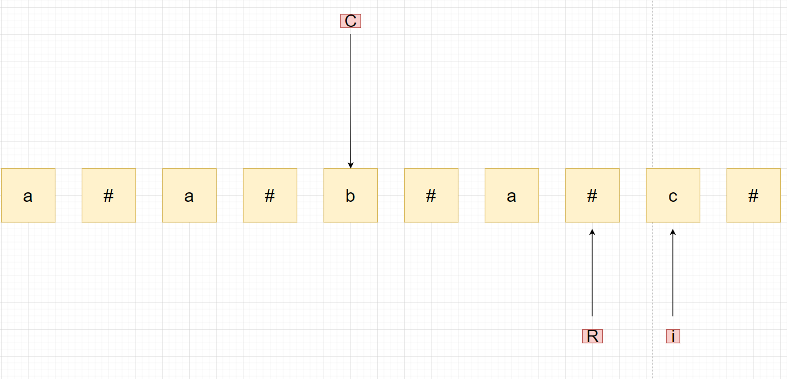
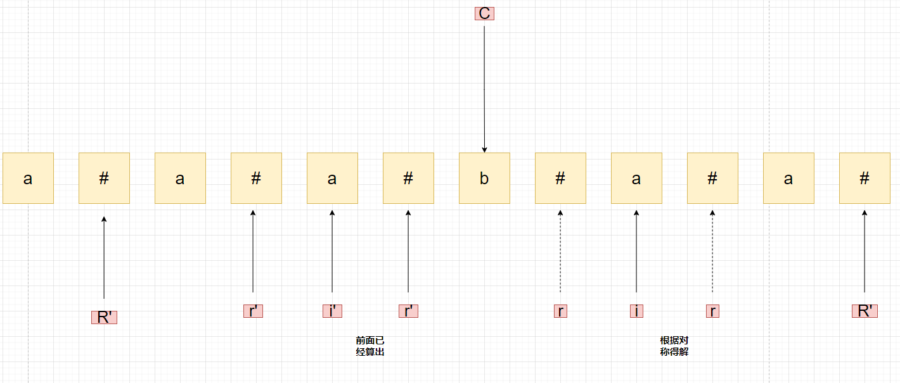
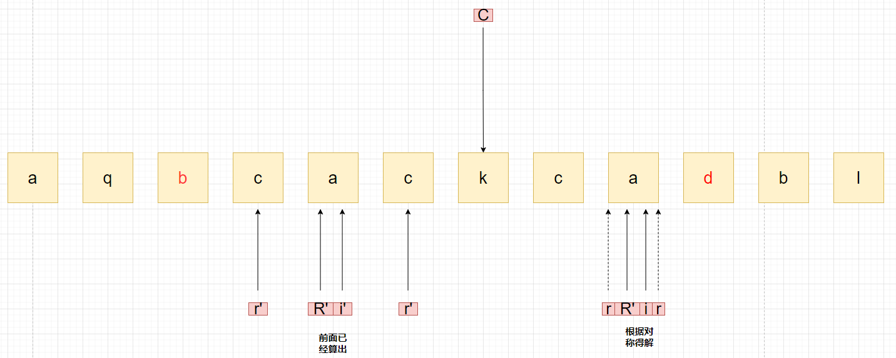
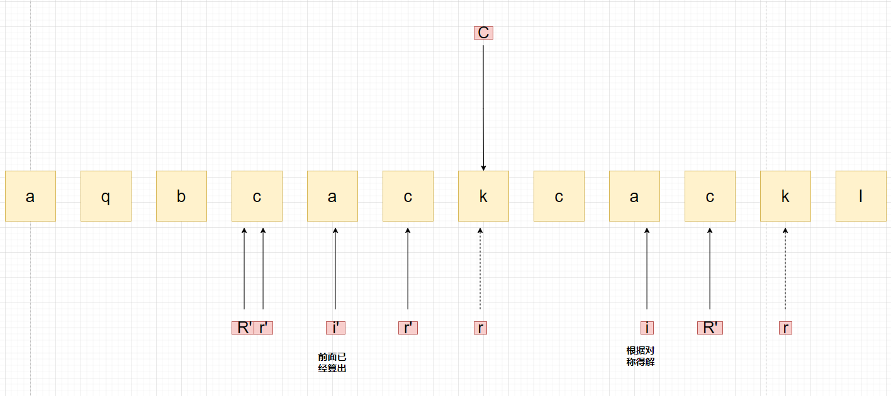

Manacher算法
这个算法应用在日常中还是比较常见使用的，但不知道为什么很少人讲这个算法，至少在我的身边是这样。
问题引入
给定如下序列，求其最长回文子串的长度
$${\rm{a}}baccabd$$
没错，Manacher就是解决这种最长回文字串的问题，其时间复杂度为O(n)。
算法学习
处理输入
解释说明
先看两个回文串的例子：
$$aabbaa$$
这个回文串的中心位置在两个B的中间，我们叫它虚对称轴。
$$aabaa$$
这个回文串的中心位置在B，我们叫它实对称轴。
在任何给定的回文串中，都可能会出现这两种情况，处理第二种情况显然是比较轻松的。第一种则比较复杂，那么为了处理方便，我们可以把任意给定的字符串的虚对称轴实化：
$$a*a*b*a*a$$
即用一个符号显式表示出虚对称轴，这样，我们就将第一种情况归一化到了第二种情况，处理时候只处理第二种情况即可。
代码演示
1 | public static char[] manacherString(String str) { |
算法实现
流程
实现Manacher算法，需要三个额外空间：
- 当前寻找到的回文串的最右位置R
- 该回文串的中心位置C
- 每一个位置的回文半径
之后从左到右枚举每一个位置i,计算以这个位置为对称轴得到的最大回文半径。有以下四种情况：
- i在R外，此时暴力枚举，更新C，R，该位置的回文半径。
 - i在R内，i相对于R的对称轴i’, i’的回文半径r’满足如下关系：
$$C - R > i' - r'$$
r’即为i位置的最大回文半径。
 - i在R内，i相对于R的对称轴i’,i’的回文半径r’满足如下关系
$$C - R < i' - r'$$
C+R-i即为i位置的最大回文半径r.本题为1,(看起来是0只是因为“*”没画出来)
 - i在R内，i相对于R的对称轴i’,i’的回文半径r’满足如下关系
$$C - R = i' - r'$$
i的r在半径为r’的基础上暴力枚举。
证明
暴力枚举大家都懂，我们主要讲后三种情况：
- 第二种：先证明
r >= r', 由于 i 和 i’ 关于C对称，[C-R,C+R]为以C为对称轴的回文串，现在已知C左边i’的回文串半径是r’, 所以对于右边的i来说，按照同样的半径，这两个串也是关于C对称的，所以既然左边已经是回文串，那么右边必然也是回文串。所以可以得到r至少为r’;
再证明r = r'若r比r’大1，那么由于C + r < C + R, 所以C ＋ r ＋ 1 <= C + R,即新的区间仍然在[C-R,C+R]为以C为对称轴的回文串内，那么根据区间的对称性，理应i’的回文半径也得＋1，但显然i’的回文半径就是r’，矛盾，所以r = r' - 第三种，先证明
r >= C + R - i, 同理第二种，由[C-R,C+R]内的对称性可得，r >= C + R - i， 现在证明r = C + R - i,假设r > C + R - i,则考虑C+R+1,C-R-1,如果C+R+1在i的回文半径内，则由回文串的性质，C+R+1的字符与2i - C - R - 1，这两点关于i对称，而2i - C - R - 1在[C-R,C+R]内，所以求其关于C的对称3C - 2i + R + 1，得到i’回文半径内的一点，再由i’作为对称轴得到2i' - 3C + 2i - R - 1. 结合i’与i的关系i' + i = 2C,带入得，该点坐标为C-R-1,那么C-R-1与C+R+1应该是相等的，那么R应该在原来的基础上＋1，但显然不是这样，所以矛盾。 - 第四种，同理第三种的情况，r’的最小值为
C + R - i, 但由于正好擦边，所以第三种后面的证明已经不成立了，这时候就只能暴力枚举了R外的情况了。
代码
1
2
3
4
5
6
7
8
9
10
11
12
13
14
15
16
17
18
19
20
21
22
23
24
25
26
27
28public static int maxLcpsLength(String s) {
if (s == null || s.length() == 0) {
return 0;
}
char[] str = manacherString(s);
int[] pArr = new int[str.length];
int C = -1; //中心
int R = -1; //回文右边界再往右一个位置 最右的有效区是R-1位置
int res = Integer.MIN_VALUE;
for (int i = 0; i < str.length ; i++) {
pArr[i] = R > i ? Math.min(pArr[2 * C - i],R - i) : 1; //至少不用验的区域
while (i + pArr[i] < str.length && i - pArr[i] > -1) { //四种情况中的两种扩一次也会失败，所以无所谓
if (str[i + pArr[i]] == str[i - pArr[i]]) {
pArr[i]++;
} else {
break;
}
}
if (i + pArr[i] > R) { //更新C和R
R = i + pArr[i];
C = i;
}
res = Math.max(res,pArr[i]);
}
return res - 1; //半径-1就是答案
}注意点
代码对以上的思路进行了综合，导致其看起来不像之前的思路那样好理解，首先是R设置为了回文右边界再往右一个位置，这是为了处理的方便。
之后是对于四种情况的处理，其实完全可以用四个if-else来处理，但那样代码太长，为了简短代码，天才们提取出了四种情况的共性，写成了while里面的东西，即反正对于第二三种情况，扩一次也会自动失败，所以认为他们也首先暴力扩张也没关系。
本博客所有文章除特别声明外，均采用 CC BY-NC-SA 4.0 许可协议。转载请注明来自 ForeverYolo的博客！


评论